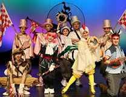
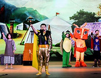
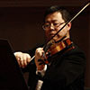
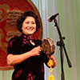
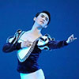

北方演艺集团是天津市规模最大的国有演艺企业，下辖天津人艺、天津儿艺
等12个直属单位，拥有演职人员1100余人，其中国家一级、二级演员270余人，
承办的“天津文化惠民卡”项目每年组织演出3500余场。北方演艺集团艺术教育
中心是北方演艺集团直属单位，秉承“专业教师、专业教材、专业培养”的理念，
充分运用集团艺术人才、演出平台等资源，为 3 至 15 岁孩子提供专业化一站式
艺术教育服务。艺术教育中心设有“六中心一团”，包括戏剧表演中心、音乐表
演中心、中华曲艺中心、中华戏曲中心、舞蹈中心、国艺中心，并由各中心优秀
学员组建“天津春雨艺术团”，参加本市和外地各类演出活动。
最专业的师资队伍
标准化的教学体系
海量登台演出机会
市级比赛考试平台
传统文化教育补贴
浓郁的文化艺术氛围


天津市春雨艺术团隶属于北方演艺集团艺术教育中心，由各中心推荐优秀学员组建而成。秉承弘扬中华民族优秀传统文化及高雅艺术的宗旨，艺术团将组织成员参加本市和外地各类文化交流及演出活动。力争用孩子们落落大方的举止、恭谦有礼的言谈和天真可爱的表演，打造一张靓丽的“天津名片”。同时，通过各类文化交流活动增长孩子们的见识、拓展视野，为孩子们的成长留下珍贵的记忆。
戏剧教育不仅能培养儿童“戏剧表演”兴趣和能力，还能在戏剧活动中提升儿童的情商和综合素质。戏剧影视中心共开设戏剧表演和主持朗诵两大专业，从基础班、精品班到戏剧社，由简到难，主要聘请天津人民艺术剧院、天津儿童艺术剧团的艺术家和演员为授课教师，选拔优秀学员参加市级专业剧团的正式演出。“舞台、灯光、掌声、鲜花，戏剧带给孩子们的不止是精彩的童年，还有更加自信的自己”！
-
齐丽华
-
 李欣欣
李欣欣 -
 肖明月
肖明月
音乐教育不仅能提高儿童艺术审美能力、用音乐抒发情感能力，还能使人的情感升华、净化，使人格完美，并培育良好的道德素养和什么素养。音乐表演中心共开设声乐表演唱、小提琴、钢琴、打击乐、管乐和音乐素养课等专业课程。主要聘请天津市交响乐团艺术家、天津音乐学院教师为授课教师，并组织参加全市各级大型演出活动。爱因斯坦说，“没有早期的音乐教育，干什么我都会一无所成”。
-
石宇
-
 田子琦
田子琦 -
 刁显惠
刁显惠
戏曲教育是集表演、舞蹈、歌唱、服装、化妆、武术、杂技等诸多表演技能和技巧于一体的综合艺术教育，包含历史、文学、音乐、歌舞等多元化的华夏人文精髓，能够提高人的审美能力和到的素养。中华戏曲中心开设京剧、平局两大类型课程，聘请天津市青年京剧团、天津评剧院的艺术家为授课教师，传授生旦净末丑等各种技艺技巧，并选拔优秀学员参加市级专业院团的正式演出。“中华戏曲教育会孩子的不只是唱念做打，更是文化气质和民族精神”。
-
 张克
张克 -
赵秀君
-
曾昭娟
-
王有才
-
郭美美
-
卢松
曲艺是中华民族说唱艺术的统称，通俗易懂，朗朗上口，是极具民族特点的艺术形式，深受津城市民喜爱，天津也被称为“曲艺之乡”。曲艺教育对于儿童的表达、写作、创作和表演能力都有非常重要的作用。中华曲艺中心开设曲艺和民族器乐两大类课程，包括相声、快板、鼓曲（京韵大鼓、梅花大鼓、单弦等）、二胡、琵琶、古筝等课程，聘请天津市曲艺团的老中青三代艺术家为授课教师，并选拔优秀学员参加各类演出活动。“曲艺，让孩子的一生更幽默、自信、快乐、更具创造力”。
-
魏文亮
-
 籍薇
籍薇 -
刘秀梅
-
李梓庭
-
 李少杰
李少杰 -
夏炎
舞蹈被称为“艺术之母”，舞蹈教育以音乐教育和动作教育为主，对儿童的智力开发、体型塑造、身体运动机能完善、身心健康有特殊的作用。舞蹈中心开设儿童舞、中国舞、芭蕾舞、时尚舞蹈（街舞、摩登舞等）、民族舞等课程，聘请天津歌舞剧院、天津市青年友好使者艺术团、天津市儿童艺术团的艺术家为授课教师，并组织参加全市各类大型演出活动。“每个女孩，心中都住着一个舞蹈精灵”。
-
程悦
-
袁帅
-
薛芮
中国古代将琴、棋、书、画视作读书人的基本素养，能够启发人对美的追求，激发敏锐的观察力、丰富的想象力。国艺中心开设美术（创意美术、儿童画、水粉画、素描、卡通动漫画、国画、绘本创作）、手工（陶艺制作）、书法（硬笔书法、软笔书法）、棋类（象棋、围棋）等课程，主要聘请天津市美协、书协成员为授课教师。“父母对孩子的教育应该更加关注琴棋书画和情操，不然未来难发展”。
-
孙玉田
-
聂民庆
-
 宋堃平
宋堃平